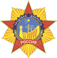
ВОО «Трудовая доблесть России»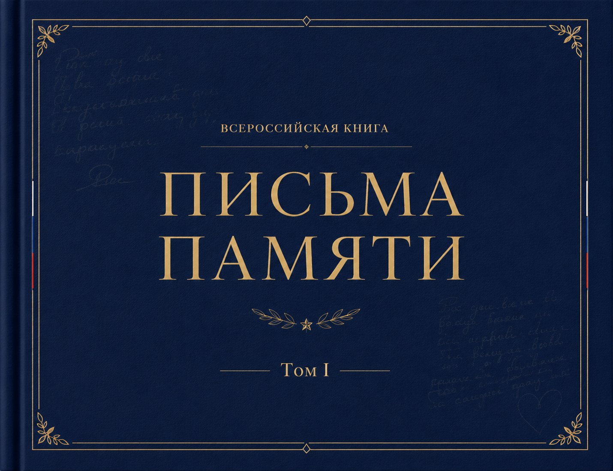
Всероссийская книга
Том I
Совместная инициатива
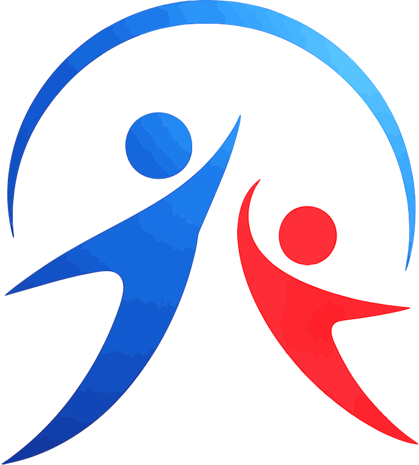
Издана по совместной инициативе АНО «Центр поддержки детей погибших военнослужащих» и проекта «Диалог поколений. Герои и дети».
Проект состоялся в том числе благодаря поддержке

ВОО «Трудовая доблесть России»Москва · 2026
География памяти
Авторы книги — дети героев из разных регионов России.
Эта книга объединяет голоса семей со всей страны.
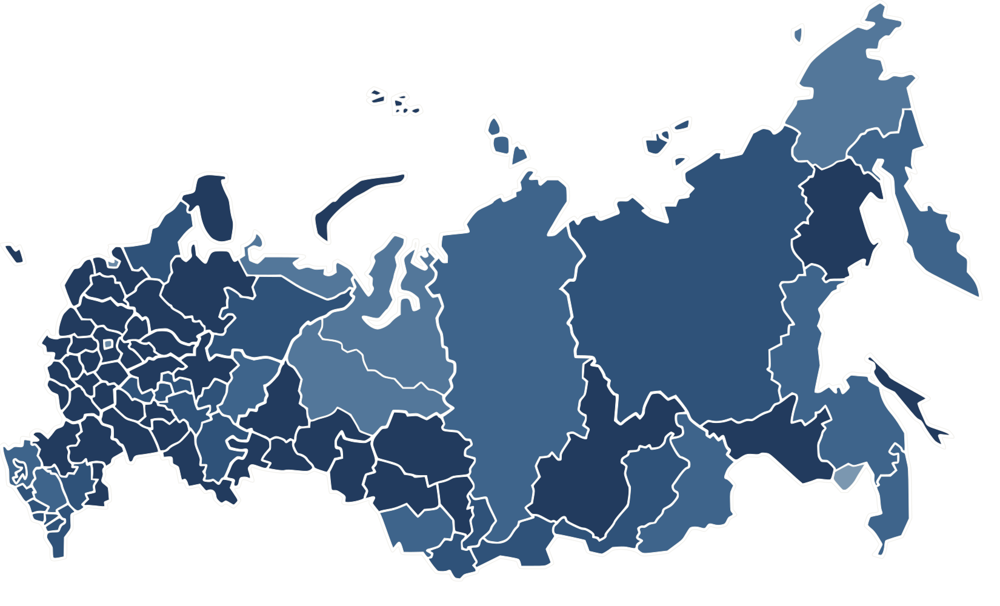
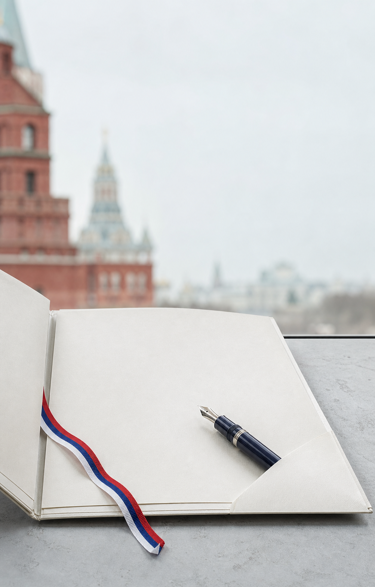
География памяти
74 семьи · 78 писемГолоса детей героев из разных регионов России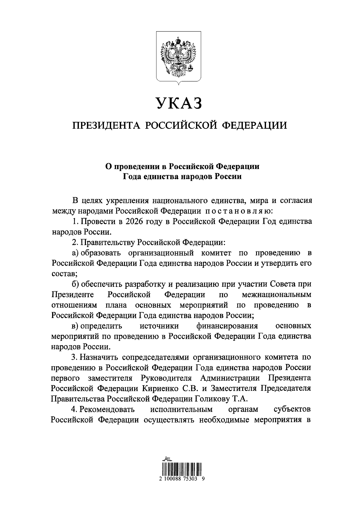
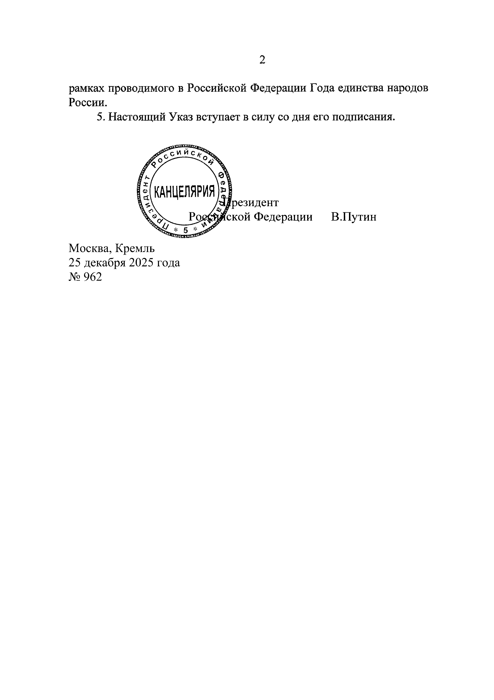
Официальная основа
В целях укрепления национального единства, мира и согласия между народами Российской Федерации постановляю:
1. Провести в 2026 году в Российской Федерации Год единства народов России.
2. Правительству Российской Федерации:
а) образовать организационный комитет по проведению в Российской Федерации Года единства народов России и утвердить его состав;
б) обеспечить разработку и реализацию при участии Совета при Президенте Российской Федерации по межнациональным отношениям плана основных мероприятий по проведению в Российской Федерации Года единства народов России;
в) определить источники финансирования основных мероприятий по проведению в Российской Федерации Года единства народов России.
3. Назначить сопредседателями организационного комитета по проведению в Российской Федерации Года единства народов России первого заместителя Руководителя Администрации Президента Российской Федерации Кириенко С. В. и Заместителя Председателя Правительства Российской Федерации Голикову Т. А.
4. Рекомендовать исполнительным органам субъектов Российской Федерации осуществлять необходимые мероприятия в рамках проводимого в Российской Федерации Года единства народов России.
5. Настоящий Указ вступает в силу со дня его подписания.
Текст и факсимиле сверены с официальной публикацией Указа Президента Российской Федерации № 962.
Приветствие
Я держу в руках наш Первый том «ПИСЬМА ПАМЯТИ» и читаю ваши пронзительные, искренние строчки. Каждое ваше слово, написанное детской рукой о своем отце, наполнено такой святой любовью, гордостью и силой духа, что у нас, седых генералов, наворачиваются слезы на глаза. Вы абсолютно правы: ваши отцы — великие, настоящие Герои, которые совершили высший человеческий подвиг, защищая мирное небо над нашей Родиной, и навсегда вписали свои имена в вечную летопись Отечества. Вся наша Держава свято чтит и помнит их бессмертную ратную славу.
Вся моя долгая жизнь была посвящена строительству военной, оборонной и космической мощи нашей страны. И сегодня, читая ваши эссе, я хочу передать вам один важнейший жизненный вектор. Великая Россия всегда держалась на единстве ратного подвига и созидательного духа. Защита наших рубежей на фронте и добросовестный, честный созидательный труд в тылу — это две нерасторжимые грани служения Родине.
Пример покорителя космоса Валерия Токарева и легендарного строителя Алексея Макарычева наглядно доказывает вам, что доблестный мирный труд, верность долгу и научные открытия во имя России ставят созидателей в один нерушимый ряд с вашими мужественными отцами-защитниками. Вся наша Держава — это единый монолит чести и верности долгу. Вы — дети настоящих Героев, и по праву являетесь главным достоянием нашей страны. Растите честными, сильными, учитесь и трудитесь во имя России, крепко любите свою Родину и будьте во всем достойными подвига ваших отцов!
Мы гордимся вами!
«Диалог поколений. Герои и дети»
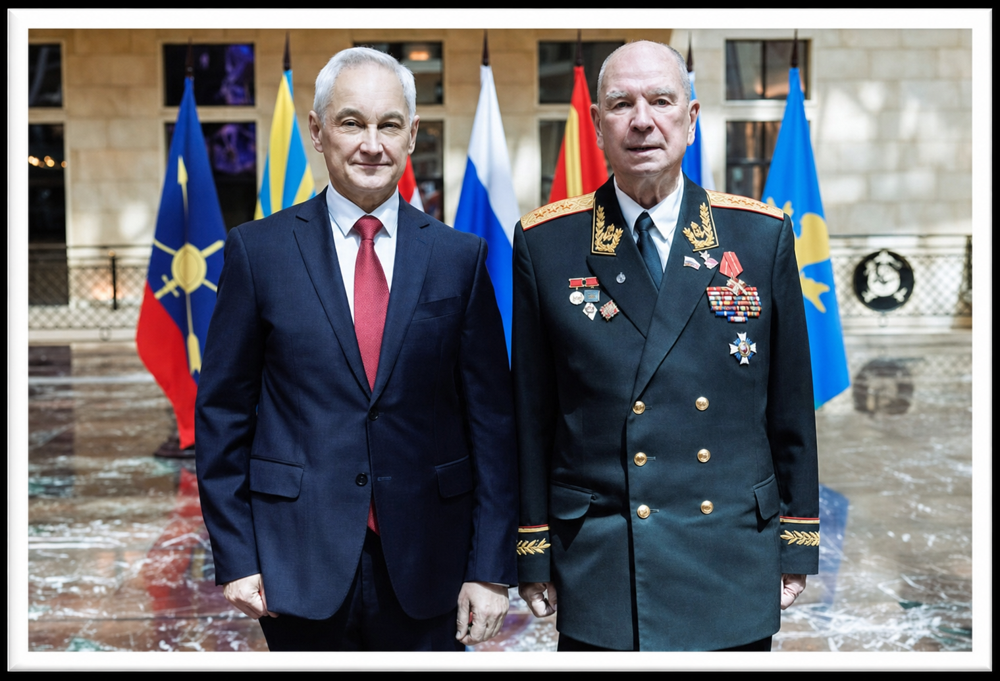
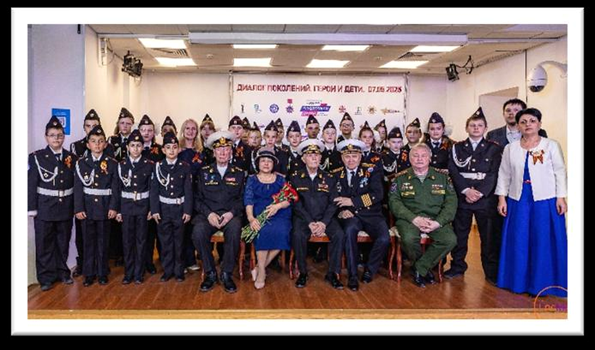
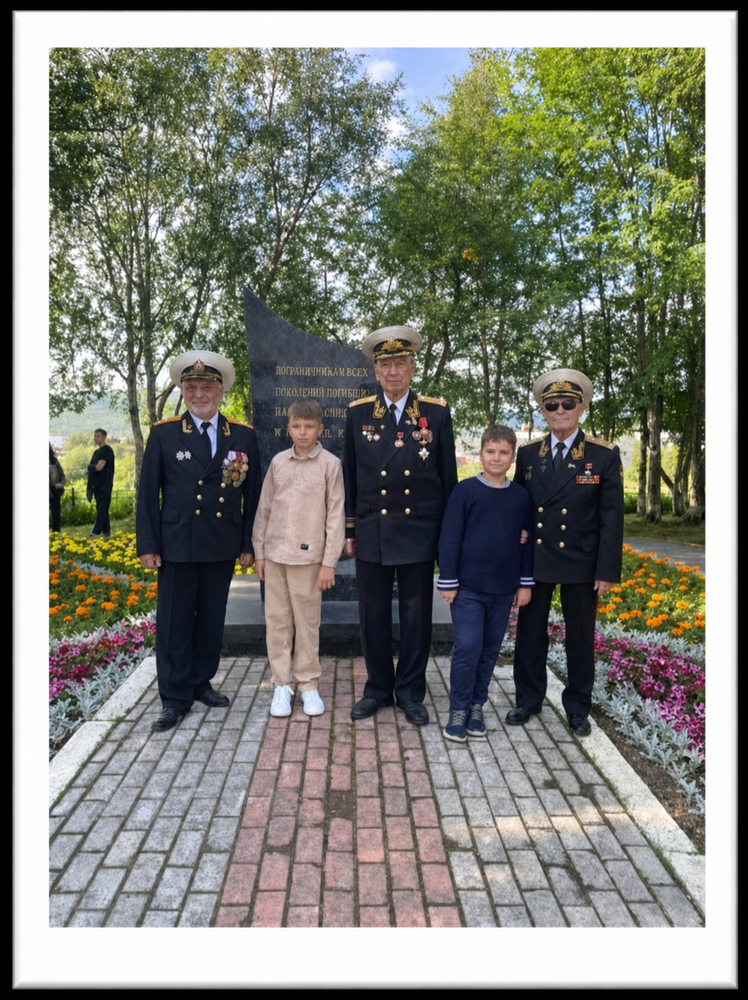
Приветствие
Я читаю ваши рассказы, и моё сердце наполняется огромной гордостью за каждого из вас. Сколько в ваших строчках тепла, искренности и настоящего мужества! Вы так здорово, своими чистыми детскими словами рассказали всей стране о своих папах. Ваши отцы — великие Герои, чьё мужество и верность присяге защитили наше Отечество.
Их ратный подвиг священен, и вся Россия преклоняется перед их бессмертной славой. Всю свою жизнь я строил большие города, возводил базу атомных подводных лодок в Гремихе, радиолокационные станции в Оленегорске и создавал космодром «Байконур». Пройдя этот путь, я абсолютно убежден: великое наследие наших защитников продолжается в созидании. Честный, доблестный труд инженера, строителя, ученого или врача, отдающего душу своему делу, намертво скрепляет мощь нашей Державы.
Труд во благо Родины — это тоже великое служение, которое стоит плечом к плечу с ратной доблестью ваших отцов. Мы с моим Учителем по жизни и моим командиром, и старшим другом, с кем дружим более шестидесяти лет - генерал-полковником Леонидом Вениаминовичем Шумиловым, очень хотим, чтобы это единство ратной и созидательной славы стало вашим главным жизненным ориентиром. Вы — дети Героев, надежда и будущее России. Учитесь с интересом, идите вперед с доброй улыбкой и созидайте во имя нашей Отчизны.
Совсем скоро на священной сталинградской земле мы соберемся вместе на нашей Встрече Трех Поколений.
Вперед и только с верой в победу!
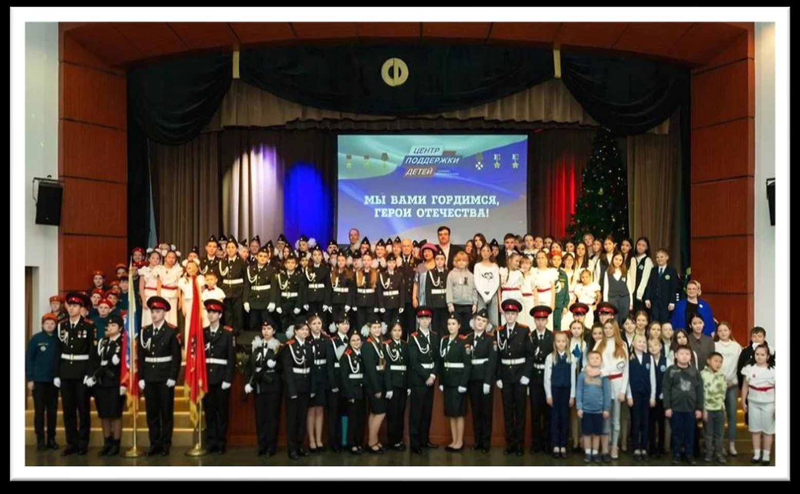
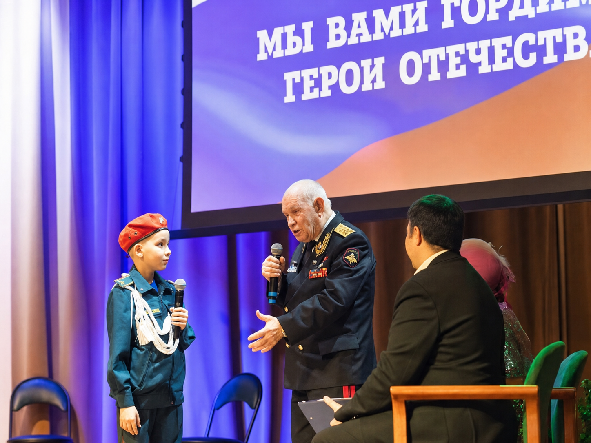
Приветствие
Уважаемые читатели! От имени Международного союза неправительственных организаций «Ассамблея Народов Мира» и от себя лично искренне приветствую вас на страницах Первого тома уникального фолианта «ПИСЬМА ПАМЯТИ», издание которого приурочено к объявленному Президентом России В. В. Путиным Году единства народов России.
Каждое рукописное эссе, каждое стихотворение и рисунок в этой Книге — это не просто творчество, это живой, нерушимый монумент духа нашего народа. Сегодня, когда Россия проходит через время суровых исторических испытаний, ваши искренние детские строки из всех 89 регионов страны демонстрируют всему миру абсолютное, неустрашимое единство гражданского общества перед лицом любой смертельной опасности. Вы — дети истинных Героев Отечества, чьи отцы, гвардии майоры, офицеры и рядовые бойцы, до последнего патрона и до последнего вздоха защищали будущее нашей многонациональной Родины. Они принадлежали к разным культурам и национальностям, но их объединяла верность одной присяге и одной великой Отчизне.
Вы унаследовали их мужество и гордость. Помните: за вашими плечами стоит вся огромная Россия. Мы свято храним память о подвиге ваших семей и сделаем всё, чтобы поддержать вас на пути созидания. Низкий поклон матерям Героев за воспитание достойной смены.
До встречи в городе-герое Волгограде!
Приветствие
Уважаемые читатели! От имени Общероссийского общественного движения «Сенежский форум» и от себя лично искренне приветствую вас на страницах Первого тома уникального фолианта «ПИСЬМА ПАМЯТИ», издаваемого в ознаменование Года единства народов России, объявленного Президентом Российской Федерации В.В. Путиным.
Эта Книга — не просто сборник эссе, это живое свидетельство величия, стойкости и нерасторжимой духовной связи народов нашей Отчизны. В Совет по межнациональным отношениям при Президенте РФ регулярно поступают свидетельства того, как общая память и общая гордость сплачивают наше общество. И сегодня ваши искренние, идущие от самого сердца рукописные сочинения из всех 89 регионов России наглядно демонстрируют всему миру: мы сильны своим многообразием и абсолютно едины в своей преданности Родине. Вы — дети истинных Героев Отечества, чьи мужественные отцы пожертвовали жизнями ради того, чтобы наша страна развивалась, процветала и уверенно смотрела в будущее.
Ваши отцы говорили на разных языках, принадлежали к разным национальностям, культурам и вероисповеданиям, но у них была одна общая великая Родина — Россия. И они защищали её плечом к плечу, как единая нерушимая семья. Вы, авторы этой Книги, унаследовали от своих отцов самое главное богатство — их великий дух, неустрашимость и верность долгу. Помните, что за вашими плечами стоит вся наша огромная многонациональная страна, которая гордится вами и всегда будет помнить подвиг ваших семей.
Низкий поклон матерям и женам Героев за воспитание достойного поколения.
Желаю вам, дорогие ребята, крепости духа, успехов в учебе и созидании на благо нашей великой Отчизны!
Приветствие
Издание книги-фолианта «ПИСЬМА ПАМЯТИ» приурочено к объявленному Президентом России В. В. Путиным Годом единства народов России и призвано всесторонне объединить детей наших Героев со всей Российской Федерации. Уникальность данного фундаментального издания заключается в том, что оно собирает вместе под одной обложкой детей, изначально говорящих на разных родных языках, но имеющих один великий общий русский межнациональный язык.
Наша Книга объединяет юных авторов, живущих в самых разных, уникальных уголках России — там, где веками бок о бок созидают разные национальности, бережно хранящие свои уникальные культуры, самобытные традиции и вероисповедания. Из-за расовой принадлежности и этнических особенностей эти дети могут даже визуально выглядеть по-разному, но все они абсолютно равны и нерасторжимы, поскольку имеют одну общую, великую и священную Родину — Россию! Всероссийская Книга-фолиант «ПИСЬМА ПАМЯТИ» — это живой монумент, наполненный чистыми сердечными сочинениями детей, чьи мужественные отцы до последнего вздоха сражались и погибли за Россию. От всего сердца выражаю глубокую благодарность каждому из вас, дорогие ребята, за то, что вы написали эти искренние строки, создали замечательные рисунки и передали свои самые сокровенные чувства, открыв всему миру, почему вы по праву считаете своих отцов Героями СВО.
Эти пронзительные детские строки наглядно продемонстрируют всему миру абсолютное, неустрашимое и нерушимое единство нашего великого народа перед лицом любой, даже самой смертельной опасности! Отдельно благодарю вас за присланные для этой книги уникальные фотографии из ваших семейных архивов. Также хочу выразить искреннюю признательность всем матерям, которые бережно отнеслись к памяти наших защитников и помогли собрать и отправить эти бесценные материалы для подготовки к изданию нашей общероссийской книги "ПИСЬМА ПАМЯТИ".
До встречи в городе Волгограде!
Диалог поколений
Страница сохранена для дополнительных фотографий Адины Арыковны. Композиция будет заполнена без изменения соседней страницы приветствия.